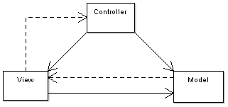

Architecture

-
Client layer
Client layer adalah layer yang diakses pada sisi user, bisa dikatakan sebagai presentation layer. Layer ini adalah layer antarmuka (user interface) kepada user.
-
Business layer
Business layer adalah layer yang berguna sebagai penengah antara data layer dan client layer. Layer ini disebut juga intermediary layer. Layer ini menjalankan business logic yang dideklarasikan seperti validasi data, perhitungan, dan memasukkan data ke database.
-
Data layer
Data layer atau disebut juga Data access layer digunakan untuk menyimpan data.

Teknologi
Secara teknikal berikut adalah teknologi yang digunakan pada Odoo.
-
Python
Python adalah sebuah bahasa pemrograman yang bersifat terbuka. Odoo menggunakan bahasa pemrograman Python sebagai business logic dan business object pada aplikasinya. Selain itu secara khusus file Python juga digunakan sebagai manifest untuk mengetahui informasi modul. Untuk Odoo dibawah versi 11 menggunakan Python versi 2.7, sedangkan versi 11 dan yang terbaru menggunakan Python versi 3. Sebuah kebiasaan yang baik apabila di baris pertama file python yang kita buat dimulai dengan berikut:
# -*- coding: utf-8 -*-Gunanya adalah menandakan skrip pada file menggunakan unicode UTF-8, sehingga menghindari error ketika menggunakan karakter yang tidak ada pada ANSI. * PostgreSQL
Odoo menggunakan PostgreSQL sebagai database untuk datanya. Versi yang digunakan adalah versi 9.6. Pada Odoo, developer tidak membuat, menginisialisasi database untuk digunakan Odoo, akan tetapi menggunakan platform Odoo untuk membuat database dan Odoo akan otomatis membuat tabel yang akan digunakan. Begitu juga melakukan pembuatan field atau mengubah field dilakukan melalui file Python. Membuat database Odoo dapat dilakukan langsung dengan cara membuka Odoo dan klik tombol Create Database pada database manager. Secara otomatis modul yang ada pada addons path (folder untuk menyimpan modul) dapat dilihat di menu Apps. Erlangga Indra Permana erlaangga.github.ioTraining Odoo Technical Secara konvensi, email dan password Odoo secara default untuk development adalah admin yang sekaligus akan menjadi superuser pada user Odoo. Language diisi dengan English sebagai default. Country diisi sesuai negara kita tinggal. Ketika “Load demonstration data” dicentang maka akan memuat data demo pada modul sebagai data dummy untuk mengetes fungsional modul.
-
Markup Language (XML)
Bahasa markup atau Markup languange digunakan sebagai penanda pada suatu data, yang paling umum kita temui adalah HTML saat kita berselancar pada dunia maya. Apa yang kita lihat di browser saat kita berselancar sebenarnya adalah data pada markup yang di-parsing pada browser sehingga menghasilkan sebuah tampilan. Bahasa markup juga biasanya memiliki struktur hierarki seperti pohon, yang artinya sebuah tag harus mempunyai struktur yang berurutan. Tidak jauh berbeda pada browser yang mengubah HTML menjadi sebuah tampilan, pada Odoo ekstensi file berupa XML digunakan untuk mendeklarasikan data yang berisi menu, action, tampilan, atau pun data untuk suatu model. Data berupa menu, action, dan tampilan akan diubah menjadi menu dan tampilan yang akan menjadi tempat bagi data-data untuk ditampilkan.
<odoo> <!-- pembuka --> <data> <!-- pembuka --> <record model="{nama model}" id="{record identifier}"> <!-- deklarasi record --> <field name="{nama field}">{nilai}</field> <!-- nilai field-nya --> </record> </data> </odoo>
Di atas adalah contoh dari struktur isi file xml untuk Odoo. Sebuah bahasa markup mempunyai elemen (tag) dan di dalam tag dapat berisi atribut. Seperti contoh tag record mempunyai atribut model dan id, sedangkan tag
<field>memiliki atribut name. Sebuah id pada record dalam satu modul tidak boleh sama. Hal ini akan berpengaruh saat external identifier (id ekternal) suatu modul diacu. Format id ekternal adalah nama_modul.id_record. Ketika sebuah modul di-upgrade, data pada XML dimuat ulang yang membuat data akan berubah. Kita dapat mencegah hal tersebut dengan menambahkan atribut noupdate yang bernilai True pada elemen data menjadi seperti berikut:<data noupdate=”1”> -
CSV
CSV adalah File CSV pada Odoo mirip kegunaan XML untuk memasukkan data. Sedikit berbeda pada CSV jika pada XML kita dapat memasukkan data ke dalam model dengan mengisi nilai atribut model pada tag record, pada CSV kita hanya dapat menyimpan data untuk satu model untuk satu file CSV. Contohnya ketika ingin menyimpan data dengan file csv pada model
ir.model.accessmaka kita harus membuat fileir.model.access.csvdan berisi kolom (field) serta nilai dari setiap barisnya untuk field tersebut. -
Framework
Framework secara bahasa berarti kerangka kerja. Secara istilah pemrograman framework adalah suatu kumpulan library atau paket program yang mempunyai fungsi-fungsi dan aturan-aturan yang berguna untuk mempercepat pembuatan suatu program aplikasi. Framework dalam dunia nyata mirip seperti cetakan kue. Ketika kita ingin membuat kue dengan bentuk bintang maka adonan akan mengikuti cetakan tersebut. Namun kita pun dapat menambahkan hiasan pada kue kita sesuai selera, seperti tambahan kacang, coklat, karamel, dan lain-lain. Tatkala kita sudah mulai melakukan pemrograman dengan framework maka kita pun harus mengikuti aturan atau tata cara yang diatur dari sebuah framework. Begitu juga Odoo, ketika kita menggunakan framework Odoo kita pun harus berpikir untuk menyesuaikan diri dengan aturan-aturan pada Odoo yang sudah dibuat. Jika kita mengetahui framework berjenis MVC (Model, View, Controller), tugas Python disini adalah berkomunikasi dengan database sebagai jembatan dan controller dari interaksi di antarmuka, sedangkan XML berguna sebagai view yang akan dibuat dari data di XML menjadi sebuah tampilan HTML yang menempatkan data data. Inilah maksud dari MVC:

- Model, mendefinisikan struktur data
- View, mendefinisikan tampilan
- Controller, mengatur business logic dari aplikasi
Menggunakan framework Odoo kurang lebih hanya mengikuti template yang sudah dibuat Odoo.